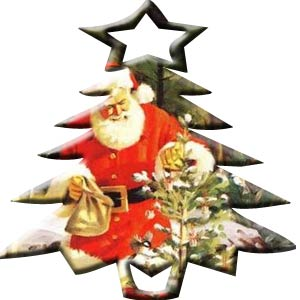

|
Viewpoint
by: Joie
Alvarez
For
the love of food and fun
Once
again, Christmas is in the air…
For fun-loving and food-loving ITPs, Christmas party means
good food, good laughs, exchanging of gifts, discovery of
hidden talents and "should be" hidden talents, and
simply a time of enjoying each other's company in a more relaxed
and gastronomically satisfying venue. Aside from the summer
outing, the Christmas party is one of the most awaited events
of the year. Because of this, every time Christmas starts
to surround the air, the Committee also starts to dig up for
ideas making sure that the coming party will be better than
the previous one. It has been the goal of every Committee
to engender a feeling of joy, fun, excitement, and childhood-ness
in every ITP. But of course, the aim of gratifying the tastes
buds and appetite of ITC people is also given a high level
of emphasis.
It's
a different year!
This year, ITPs are presented with an idea of the occasion
that is very much different from the previous ones. This December's
revelry would be with the other members of the IT Centers
from the other DLS System Schools, and it is something never
been done before. Aside from that, a suggestion was given
to go bowling then sit for dinner afterwards, atypical of
the traditional ITC Christmas Party bursting with gimmickry.
The end-of-the-year-event task force has already been communicating
with the representative of the other System Schools as to
the workings of the event to warrant its success.
Just
for the fun of it…
Because it is something new and never been tried before, both
ideas were not welcomed warmly - well, such is an expected
behavior towards change. However, in the poll conducted by
the party committee, the ITPs are quite divided in their preference
of how the party would go (17 wants a bowling party and 27
prefer a conventional get-together). Nevertheless, whatever
activity would be agreed upon, the ITC people are set to enjoy
themselves on that day. Anyway, Christmastime is a time for
joy which should be shared amongst everyone. Mysterious as
it may appear, Christmastime seems to create a vacuum in time
when the negativities of life are temporarily halted. So let
us all have a one for the road goodtime come December!
|